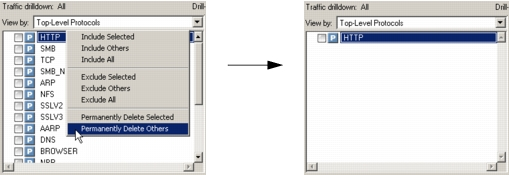
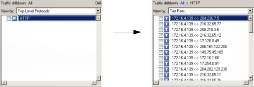
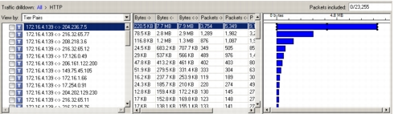
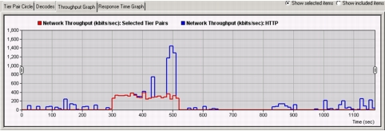
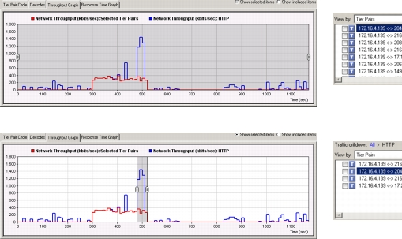
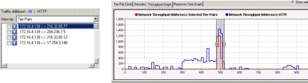
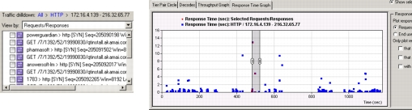
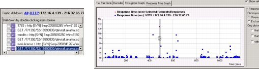
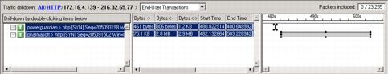
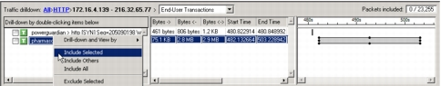

Example Workflow: Drilling Down, Searching, Extracting, and Importing In this example, we follow an application developer/troubleshooter as she extracts a problematic user-level transaction from a large packet trace. This shows one possible workflow for finding transactions, and illustrates how you can use the different features in Trace Explorer to navigate through your capture data. Note—Many of the Trace Explorer features described in this example also apply to Trace Summary. The main differences between Trace Explorer and Trace Summary are:- Trace Explorer is accessed before packet traces are opened in Transaction Analyzer. Trace Summary is accessed after packet traces are opened in Transaction Analyzer.- Trace Explorer includes the ability to save included packets to a new packet trace. Trace Summary does not include the ability to save included packets to a new packet trace. Example, Step 1: User Opens Packet Trace in Trace Explorer The user has a continuous capture running on a web-server tier in her organization. Her goal is to look for problematic HTTP transactions and troubleshoot them in AppTransaction Xpert. She takes a packet trace that records twenty minutes of traffic and opens it in Trace Explorer. Example, Step 2: User Filters Out Extraneous Traffic The Drilldown Pane shows traffic that uses a number of different protocols. Because she is only interested in HTTP traffic, she starts by deleting all traffic that uses non-HTTP connections.  Example, Step 3: User Drills Down One Level Next, she double-clicks on “HTTP” to drill down one level (from Protocol Connections to Tier Pairs). Now she can see all the tier pairs that are using HTTP connections.  Example, Step 4: User Looks for “Spikes” of HTTP Traffic Judging from the graph on the right, it appears that one tier is exchanging much more HTTP traffic than the others.  However, when she looks at the Throughput Graph on the bottom, she can see one particular “spike” of HTTP traffic. She decides that this “spike” is worth investigating.  Example, Step 5: User Zooms In on the Time Window of Interest Using the drag handles, she reduces the selected time range to focus on this exchange. As she reduces the time range, the Traffic Drilldown pane hides tier pairs that do not exchange traffic within the selected time range.  Example, Step 6: User Determines the Tier Pair Responsible for the Spike in HTTP Traffic By individually selecting each tier pair in the Drilldown Pane and observing the red line in the Throughput Graph, she can see that one tier pair is responsible for most of this spike. She double-clicks on this tier pair to drill down to the next level.  Example, Step 7: User Looks for Long Request/Response Cycles Having found the tier pair responsible for the spike in HTTP traffic, she double-clicks on this tier pair. The Traffic Drilldown goes down one level and shows all request/response cycles for that tier pair. Because response times (rather than traffic levels) are generally of more interest at this level, the Response Time Graph now becomes active.  Example, Step 8: User Adjusts Time Window Seeing one particularly long request/response cycle, she adjusts the time window using the drag handles. She then selects items in the Traffic Drilldown Pane one by one until she finds the item that turns the request/response cycle in the time window to red.  Example, Step 9: User Views End-User Transactions Within Time Window Now that she sees the time window with the longest request/response cycles, she changes the Drilldown level to End-User Transactions. The Drilldown Pane now shows all end-user transactions for that time window.  Example, Step 10: User Includes Transaction and Opens it Transaction Analyzer She sees there is a very long transaction, with a response time of 21.1 seconds. She includes this transaction and opens it in Transaction Analyzer. 